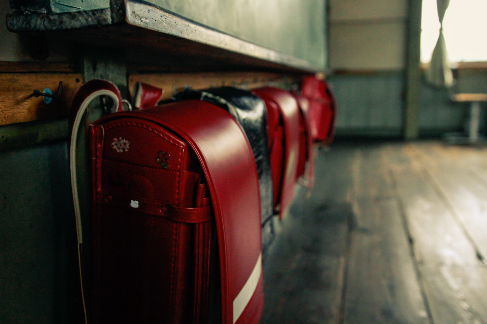
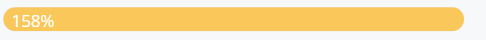

前年度の洪水で荒れたままの状態の小学校。明るい雰囲気を取り戻したい！
一緒にプロジェクトを応援してください！
|  |

🌱 目標額：6000万円 あと 1000万円が不足中です
避難所の状況報告です。物資の足りてないのは過疎化が進んだ地域。お年寄りや子どもに疲れが見え始めています。災害が起こって唯一良かったなと思う事は、地域の人々の助け合いが進んだこと。田舎といえども離れていたので密なやり取りは途絶えがちでしたが、一か所に集まったことにより助けやすく頼りやすいコミュニティが生まれています。
💗１００ 🌸５０ FB TW Inst
|

震災から10年。使わなくなった小学校が荒れたままです
10年たった校舎は、ガランとしてさみしい雰囲気。
この場所をまた利用できるようにしたい！
卒業生と在校生みんなが協力して、全国から植物を集め、育てるプロジェクトをはじめました。


とにかく人に来て、校舎を使ってほしい！
広い校舎は、誰もいないとさみしさが出てしまいます。また、古い建物は人が使わないと荒れていきます。 全国からクリエイターを集め、様々なイベントができるよう、まずは校舎を明るくしたい！只今活動中！！